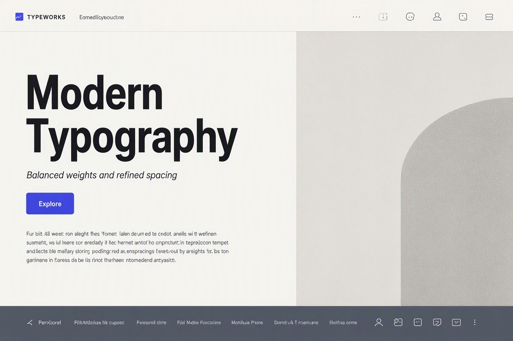
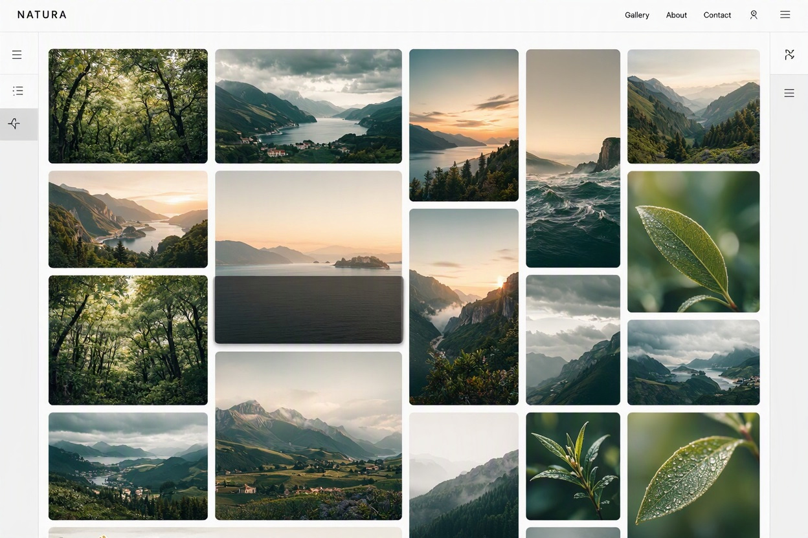
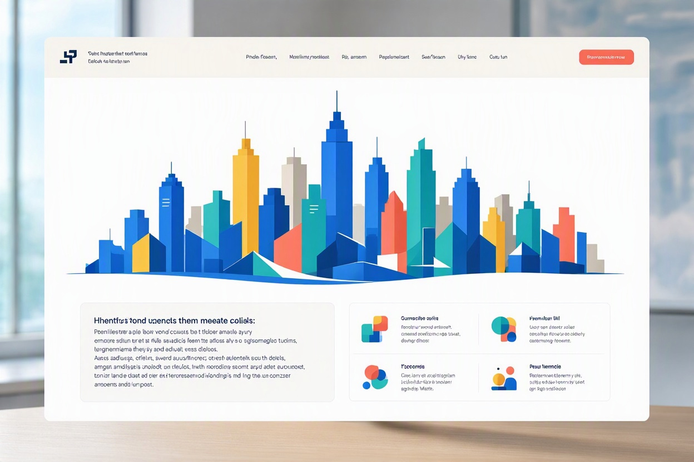

Marcus Hagans
Junior Web Developer based in Lynchburg, VA
View my workAbout me
I am a beginner web developer who likes building clean and responsive websites. I enjoy being creative and making webpages that look good and are easy for people to use.
My goal is to build products that are not only functional but also visually engaging that people can enjoy.
My Skills
-
🌐
HTML5
Structure and accessibility.
-
🎨
CSS3
Flexbox, Grid, and fluid typography.
-
📜
JavaScript
Interactivity .
-
📐
Figma
UI/UX design and prototyping.
-
🚀
GitHub
Control and collaboration.
-
♿
WCAG AA
Building the best web experiences.
Selected projects

